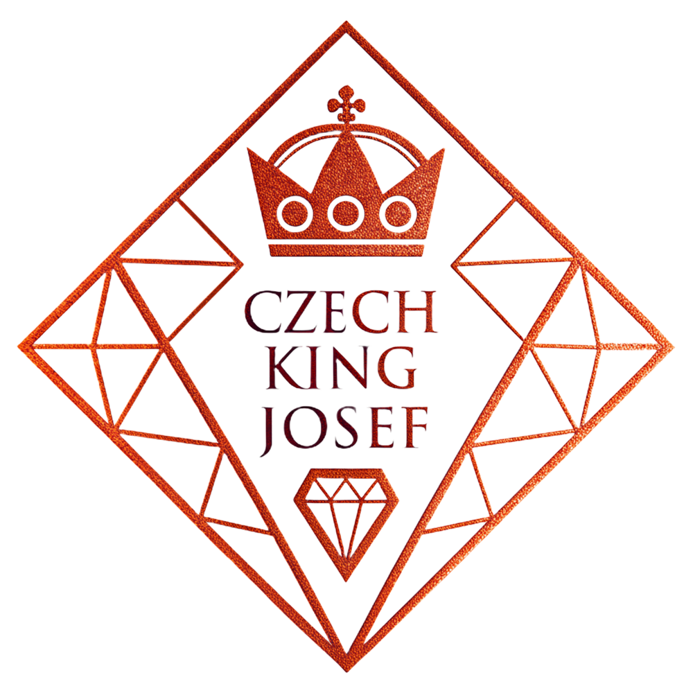

BTJ CZ je součástí ekosystému Neotantra – dlouhodobého decentralizovaného projektu zaměřeného na svobodu, kontinuitu a digitální suverenitu.
Metadata a identita projektu jsou archivovány na Arweave, aby byly trvale dostupné a nezávislé na serverech či korporacích.
Zakladatel projektu Neotantra a iniciátor tokenů BTJ. Zaměřuji se na decentralizované technologie a struktury, které mají dlouhodobou hodnotu a kontinuitu.
neotantra.cz | email: info@neotantra.cz